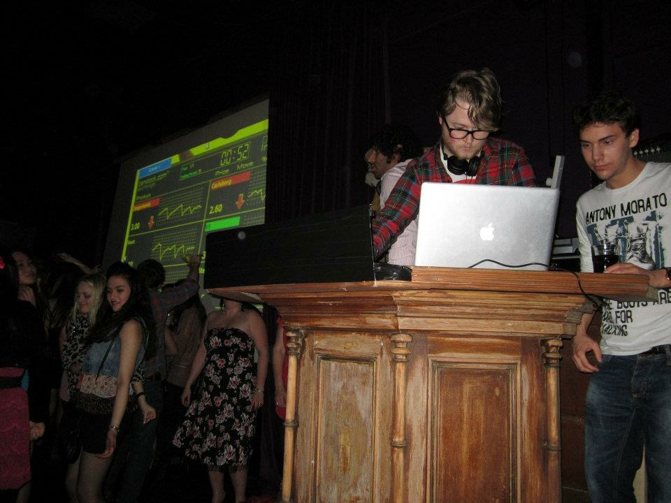

WHAT HAS HE STUDIED?
Now, the assignment so graciosuly given to me by Oslo Met specificed certain website areas, which are the ones displayed on the menu.
By the way, did you notice the slick menu animations?
Anyway, one of those categories is what I've studied and that is what I'm going to tell you about here.
The Beginning

I started as most others with primary school. I went to Smestad Skole, which is located on the west side of Oslo. Several members of the Royal family have enroled there. That should tell you about the sort of family I grew up in. Not really, both of my parents grew up in simple househoulds on the countryside.
I was a nerdy, weirdo as a kid (and still is) and I spent a lot of time studying encyclopedieas and reading books. For instance, I read Hemingway in English at age 7 and studied the Bible at age 10. Quite a sophisticated lad, eh?
After Smestad Skole, I enrolled at Ris Ungdomsskole, where I had an awful time.
The Transition Period
At 16 I moved to Vienna where I went to an international school. I lived there for 2 years, completed the IB programme and had an amazing time.
The most valuable lesson for me was the realization that how we do things in Norway isn't necessarily the optimal way to do things. I always believed that Norway was the perfect society; we score high on various quality of life rankings, we're a wealthy country, the welfare state is sick bro and so on. But Vienna was such a well-functioning city and I felt a greater sense of freedom there than I did back home.
As a result I wasn't too keen on returning home, and this set the precedent for my future endeavours.
The University Years
Quickly after completing the IB, I left for England to study Business, which was, in retrospect, an unfortunate decision. Not because England is a dump or that something particularly horrible happened, but because Business is an awfully boring subject. I did make my debut as a DJ though.

After 3 years of torturing boredom, I realized that the job market is satured with hopeful youngsters with bachelor degrees. In other words, getting a decent job with a decent pay was a pipe dream. There was no other choice but to get a Masters degree.
Thankfully my Masters degree was a lot more interesting than my Bachelor studies. The topic was Innovation and Entrpreneurship, and it focused on practical learning. I had the opportunity to follow entrepreneurs, create a small business and research how innovation takes form within a team of game developers. This was infinitely more rewarding than spending hours reading academic journals written by pretentious losers who use archaic words that make their nipples hard.
This Page Is Getting Too Long
I'm rambling so let me quickly summarize my educational qualifications:
BSc Business Studies and MSc Innovation and Entrepreneurship at Lancaster University, UK
- Learned that Business is a boring subject and that practical learning beats theoretical nonsense.
- The Bachelor years were basically a prolonged Russefeiring.
- Master degrees are more rewarding also because the professors don't look at you as a dumb kid anymore, you're more like their colleages.
- My Master thesis involved following a group of game developers that resulted in quite an interesting thesis, which resulted in me being offered a paid doctorate. I declined.
Exchange at National Chengchi University, Taipei, Taiwan
- Yes, I went on to do a term in Taiwan.
- I stayed in Taiwan for 3 years, but that's a story for another website.